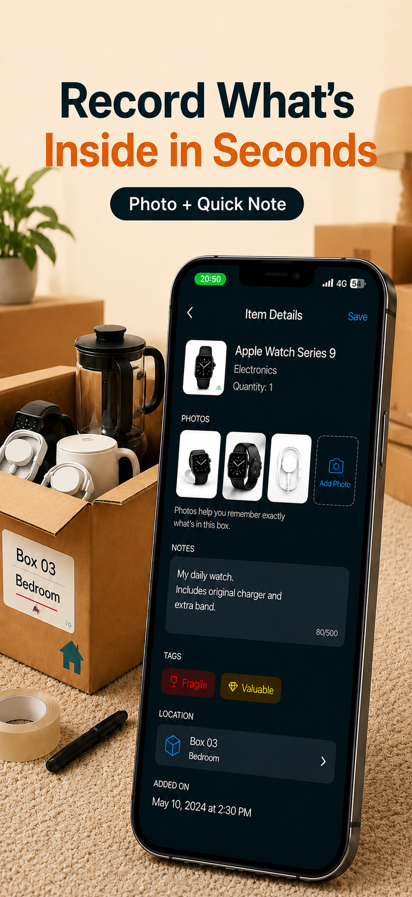
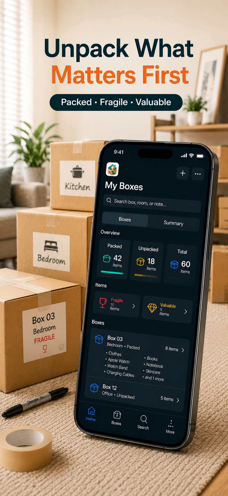

A simple moving-box system
How to keep track of what is inside moving boxes
Give every box a clear name, note the important things inside as you pack, and keep the record somewhere you can search after the box is sealed.
Moving Boxes Organizer · App Store ID 6766885651

The problem
The list disappears before you need it.
At the start of a move, remembering a few boxes feels manageable. Then the box count grows, different people help pack, and useful details end up split between marker labels, paper, phone notes, and memory.
- A room label such as “Kitchen” does not tell you which box has the coffee maker.
- A detailed paper list is hard to update once the box is taped shut.
- Photos without a box name are difficult to connect to the right stack later.
What to do
Make one useful record for each box.
- Name the box clearly.
Use a specific label such as “Kitchen 03” or “Winter clothes,” not a room name alone.
- Add its destination room.
This helps the box reach the right place even before anyone checks its contents.
- Record the things you may search for.
You do not need to type every spoon. Include distinctive, important, or frequently needed items.
- Add a photo or short note when words are not enough.
Use them for fragile objects, valuables, cables, or anything that needs special handling.
- Keep the record searchable after sealing.
The record should remain useful when boxes are stacked and their contents are no longer visible.
How Moving Boxes Organizer helps
The box name, contents, and priorities stay together.

Where it fits
For household boxes you need to find again.
This method works for a move and for boxes that stay packed afterward. It is designed for personal and family organization, not warehouse or company stock management.
- Moving boxes
- Storage bins
- Garage shelves
- Closets
- Seasonal items
Keep a record before the box disappears into the stack.
Moving Boxes Organizer · App Store ID 6766885651